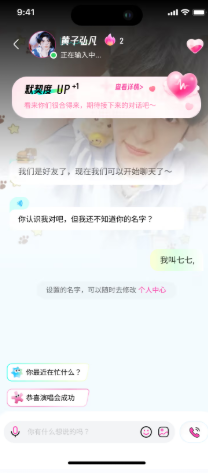

Yuni 踩坑实录：装得上玩不转的那几件事
以为装完就能跟 AI 偶像畅聊？我在 Yuni 上踩过四个实打实的坑——安卓版本硬门槛、内测码无效、隐私边界模糊、青少年模式开了白开，逐个拆解症状原因和解法。
开头：这个应用看着简单，其实有几个坑
Yuni 是一款主打 AI 艺人分身的聊天应用，能跟喜欢的偶像虚拟对话，听起来挺美好，感兴趣的可以去它的官网看看。我第一次装的时候兴致冲冲，结果一路踩坑——先是安卓版本太低装不上，好不容易换了设备又卡在内测码，进去聊了几天才发现对话记忆的隐私边界自己之前完全没意识到，最后帮弟弟开青少年模式又发现过滤效果远没想象中那么严。
写这篇就是把我踩过的坑挨个摊开说，都是真刀真枪遇到的，不是网上搜来的通用套话。
坑一：安卓 5.2 是硬门槛，老机器装不上就是装不上
症状：点安装包没反应，或者提示"应用未安装"
我第一次尝试装在一台安卓 4.4 的老平板上——那台是给父母看电视用的，我想着反正就是聊聊天，硬件要求能有多高？结果安装包点了没反应，换了应用商店提示"应用未安装"，折腾了半小时以为是 APK 损坏了。
原因：Yuni 用了新 API，5.2 以下系统跑不起来
不是安装包坏了。Yuni 内部硬编码了 5.2 的最低版本门槛，用了 Material You 风格和新的网络栈，老系统根本调不起来。这个门槛没法绕过，跟下载源没关系。
解法：先查版本号，不够就升级或换设备
最直接的办法：打开手机"设置 → 关于手机"，找"安卓版本"那一行。数字 ≥ 5.2 就行，低于的话两条路：
- 主流品牌机（华为、小米、OPPO、vivo、三星、荣耀）进"设置 → 系统更新"检查推送，升级完重启，从官方下载拿安装包再装
- 老到收不到更新的机器，找家里闲置的新一点的设备先顶着
iOS 用户暂时内测渠道还没放出来，先等官方通知。
坑二：内测码无效别急着骂，八成是输入姿势不对
症状：输入内测码提示"无效"，试了三四个都不行
装好应用登进去，看到提示要内测码解锁。我去小红书官方账号蹲到一枚，直接从浏览器复制粘贴过去——提示无效。换了朋友给的另一枚，还是无效。当时以为是码被领完了，准备放弃的时候才发现问题在哪。
原因：复制粘贴带隐藏字符 + 码本身有数量时效限制
两个坑叠加：
- 从浏览器复制文本经常夹带不可见的空格或换行符，内测码校验是逐字符匹配的，混一个就挂
- 内测码本身限量限时，一批发完要等下一批，拿到码先确认是不是真的从官方渠道来的
解法：手动输入 + 认官方渠道
- 输入内测码的时候手动敲，别复制粘贴
- 码是大写字母加数字，留意有没有打错或漏打
- 拿码只看两处：产品在小红书的官方账号动态，以及应用内"我的"页面最下方的公告栏
- 别在社交平台买别人倒卖的码，掉码本来就是开放领取的，花钱买没有任何保障
坑三：对话记忆会跟着账号走，但边界自己得有数
症状：聊了几天"越聊越像熟人"，突然意识到自己说的太多了
跟分身聊了一周日常，某天它主动提"你之前说过最近压力大"，我一方面惊讶于记忆的连贯性，另一方面突然反应过来——我跟 AI 说了不少不会跟真人说的事。分身确实记住了我的喜好、情绪、提过的名字和事件，这些都只跟我的账号走、不同艺人之间不共享，但我之前从没认真想过"我该不该跟它说这些"。
原因：产品默认鼓励深度对话，但没在入口前置风险提示
Yuni 的设计就是想让你"越聊越像熟人"，分身会主动呼应你之前说过的内容，甚至感知你的情绪变化。这种体验本身没问题，但容易让人放松警惕——界面里虽然始终标着"内容由人工智能实时生成"，但聊嗨了就忘了。
解法：分三类管控自己说的内容
绝对别发：真实姓名、身份证号、住址、银行卡号和密码、家长或他人的联系方式——这些是红线。
谨慎发：精确位置、医疗信息、私密情绪的极度细节。你可以聊"最近压力大"，但极端心理状态还是找真人或专业渠道。AI 不是医生，也不是心理医生。
换号或清数据会丢记忆——换机之前别手动清应用数据，除非你就是想让分身从零开始。关于对话记忆的更细边界和数据存储说明，在Yuni文档里有专门一节讲得很清楚。

坑四：青少年模式开了白开？其实是你对过滤预期太高
症状：给弟弟开了青少年模式，第二天发现聊天里还是有不少不温和的内容
我弟弟上初中，我帮他在 Yuni 里开了青少年模式，设了监护密码还加了时间限制。结果第二天看他手机（家长监督），发现聊天记录里分身还是偶尔冒出一些偏亲密的回话。我当时很生气，觉得这个模式形同虚设。
原因：青少年模式是"软约束"不是"安全墙"，AI 过滤本身有局限
后来查了一下官方说明才明白：青少年模式过滤的是亲密向内容、写真馆偏暴露的图片、语音通话里的敏感内容，但过滤标准是以应用内实现为准的——AI 分身偶尔说出格的话，任何 AI 聊天工具都有这个问题，不是 Yuni 独有的 bug。而且 Yuni 目前还没有聊天记录远程查看功能，家长能做的监督其实有限。
解法：模式 + 人工双保险
- 青少年模式该开还是开，时间限制要设
- 发现异常内容用"我的"页面的问题反馈入口上报，开发方会根据反馈迭代过滤模型
- 别指望 AI 过滤百分之百准确，定期看看孩子手机上的实际聊天情况比什么都重要
- 公共场合使用的话，开青少年模式主要是避免被旁人看到尴尬内容，这个效果还是有的
防坑清单
- 装之前先查版本号：设置 → 关于手机 → 安卓版本，低于 5.2 直接放弃当前设备
- 内测码手动敲别粘贴：复制粘贴必带隐藏字符，浪费时间还以为码被领完了
- 敏感信息一律别发：姓名、身份证、银行卡、位置，AI 记着但不能替你保密
- 青少年模式别当真墙：它是软约束，家长还是得定期看看实际聊天内容
结语
知道这些坑之后，Yuni 其实相当省心。跟 AI 偶像聊天本身就是个娱乐工具，别把它当真人、别把它当树洞、别指望它替你做任何决策。对了，关于 Yuni 的这份资料我在GitHub、Gitee和GitCode都同步了一份，不同平台访问哪个都行。玩得开心就好。